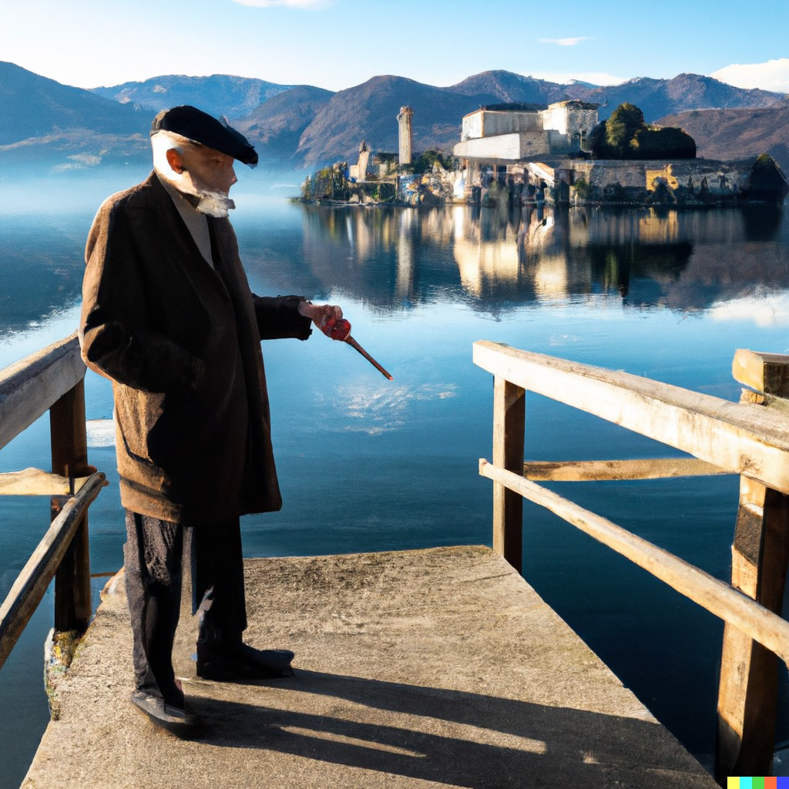

Es war einmal, auf der Insel San Giulio inmitten des Ortasees, ein sehr alter und sehr kranker Mann namens Baron Lamberto. Mit 93 Jahren litt er an 24 verschiedenen Krankheiten. Eines Tages, auf einer Reise nach Ägypten, begegnete der Baron einem geheimnisvollen Araber, der ihm ein Geheimnis anvertraute: „Der Mann, dessen Name laut ausgesprochen wird, bleibt am Leben."

Nach seiner Rückkehr nach San Giulio umgab sich der Baron mit Menschen, die Tag und Nacht seinen Namen aussprachen. Zu seiner Überraschung blieb er nicht nur am Leben, sondern begann sich zu verjüngen. Sein Neffe Ottavio sah darin die Gelegenheit, das Vermögen des Barons zu erben, und beschloss, die Sache selbst in die Hand zu nehmen, um den Tagen seines Onkels ein Ende zu setzen.
Als ob das nicht genug wäre, hatte es auch eine Bande von Räubern auf den Baron abgesehen und wollte ihn entführen. Das Leben des Barons wurde zu einer Reihe dramatischer und komischer Ereignisse. Mit Hilfe der Künstler eines Wanderzirkus wurden die Räuber gefasst, und Ottavio ergriff geschlagen die Flucht.
Trotz der Absurdität dieser Geschichte erinnert sie uns an die Schönheit und das Geheimnis des Ortasees und der Insel San Giulio. Die Insel hat eine reiche Geschichte und ist bekannt für ihre atemberaubenden Ausblicke, ihre historischen Gebäude und ihre wunderschönen Gärten. Die Villa Volpe, am Ufer des Ortasees gelegen, ist der perfekte Ort für einen Aufenthalt, um die Insel und die Umgebung zu erkunden.
Mit ihren schönen Zimmern, ihren atemberaubenden Ausblicken und ihrer Nähe zu San Giulio bietet die Villa Volpe ein unvergessliches Erlebnis. Stellen Sie sich vor, Sie erwachen zum Plätschern des Wassers am Ufer, genießen ein köstliches Frühstück und brechen dann auf, um die zauberhafte Insel zu erkunden. Vielleicht haben Sie sogar das Glück, einen Blick auf Baron Lamberto höchstpersönlich zu erhaschen!
Wenn Sie also auf der Suche nach einem Abenteuer sind, kommen Sie an den Ortasee und wohnen Sie in der Villa Volpe. Wer weiß, welche Geheimnisse und Überraschungen Sie auf der Insel San Giulio erwarten?